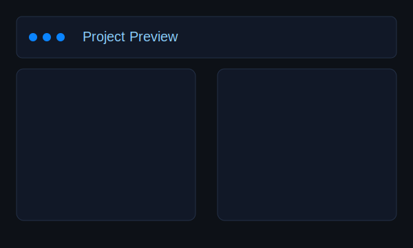

Business IT Student | Aspiring Data Analyst | Passion for Digital Transformation
Skills Showcase
A concise snapshot of my core strengths with concrete examples—built for internship applications to show I’m motivated, capable, and ready to contribute.
Break down complex tasks, validate input/assumptions, debug systematically, and iterate based on feedback.
Example: Designed a Windows Forms app with tabs (Projects, Tests, Users), added input validation, and improved usability while resolving errors and optimizing workflows.
Communication & Teamwork
Collaborate smoothly, write clearly, and present ideas with confidence in academic and professional settings.
Example: Co‑authored a group report on China’s business environment (1839–1976), practiced structured presentations and mock interviews, and balanced part‑time work at N‑Clean with studies.
Technical Skills & Continuous Learning
Comfortable with C#, SQL, HTML, CSS, JavaScript (learning), Python, Excel, Power BI (learning). Tools: Odoo ERP, GitHub, XAMPP, Visual Studio, VS Code, Jupyter Notebook, PowerShell.
Example: Built a restaurant website using WordPress and Odoo; implemented a .NET web application with a test plan and report; contributed in an Agile team project.
Projects (Evidence)

Agile Development Project — Windows Forms App C# / Problem‑Solving
Tab‑based application to manage projects, tests, and users with validation and improved usability.
Stack: C#, .NET (Windows Forms)
Role: Developer (team project)
What I did: Designed tabs, added input validation, debugged errors, optimized basic workflows
Group Report — China’s Business Environment (1839–1976) Communication / Research
Historical analysis with links to modern Sino‑foreign business relations; focused on clear structure and sources.
Outcome: Improved academic writing and presentation skills
Restaurant Website — WordPress & Odoo Web Dev / CMS & ERP
Built functional website versions using WordPress and Odoo, focusing on clarity and business‑oriented content.
Stack: WordPress, Odoo ERP, HTML/CSS
Role: Solo builder
What I learned: Content structure, CMS basics, ERP integration mindset
About Me
I am currently studying Business Information Technology at LAB University of Applied Sciences, Finland, where I’m building a solid foundation in data analysis, programming, and digital solutions.
With strong communication, problem-solving, and teamwork skills, I’m motivated to apply my knowledge and contribute to impactful projects during my internship journey.
I am passionate about data analysis, business technology, and digital transformation. My goal is to contribute to projects where I can apply technical skills, problem‑solving, and communication to deliver real value.
Contact
If you’d like to chat or review my work, I’d love to hear from you.